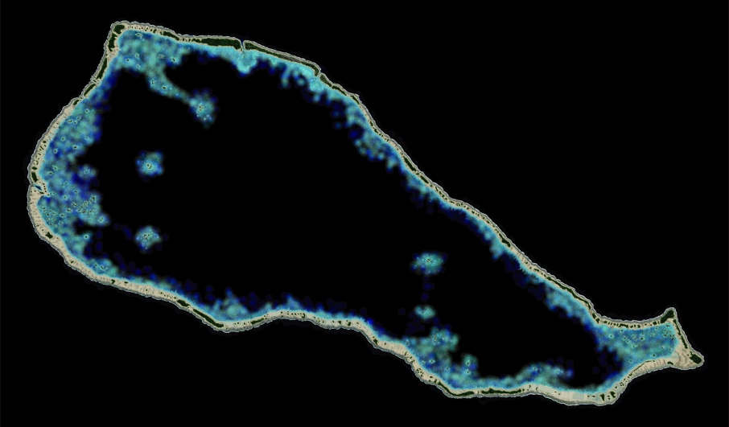
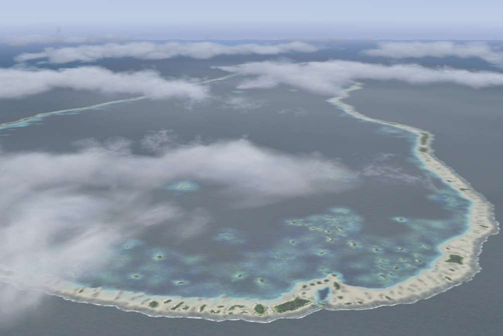
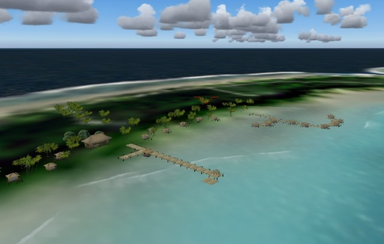
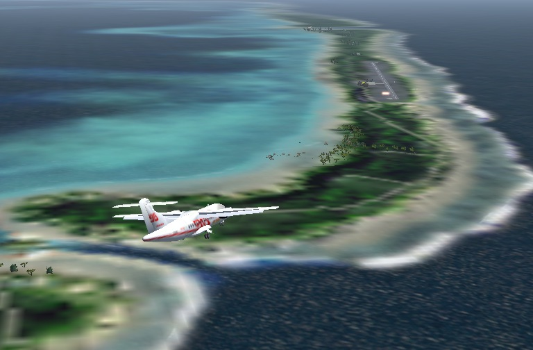

French Polynesia Tuamotu Archipelago FS9/FSX Addon Scenery
Group A
Rangiroa
Rangiroa is the largest atoll in the Tuamotu islands.
The lagoon is world famous for scuba diving and snorkeling,
and has the clearest waters in the world.

A view of the lagoon from the west-southwest side

A view of the lagoon from the west-southwest side
A combination of a yacht and a classical flying boat against the background of islets (motu) scattered in the lagoon.

A combination of a yacht and a classical flying boat against the background of islets (motu) scattered in the lagoon.

Kia-Ora Village located in east of Avatoru.
Kia-Ora Village located in east of Avatoru.
Air Tahiti ATR 42, approaching Rangiroa airport.

Air Tahiti ATR 42, approaching Rangiroa airport.